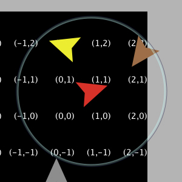

This section describes the NetLogo programming language in detail.
The Code Example models mentioned throughout can be found in the Code Examples section of the Models Library.
The NetLogo world is made up of agents. Agents are beings that can follow instructions.
In NetLogo, there are four types of agents: turtles, patches, links, and the observer.
Turtles are agents that move around in the world. The world is two dimensional and is divided up into a grid of patches. Each patch is a square piece of “ground” over which turtles can move. Links are agents that connect two turtles. The observer doesn’t have a location – you can imagine it as looking out over the world of turtles and patches.
The observer doesn’t observe passively – it gives instructions to the other agents.
When NetLogo starts up, there are no turtles. The observer can make new turtles. Patches can make new turtles too. (Patches can’t move, but otherwise they’re just as “alive” as turtles.)
Patches have coordinates. The patch at coordinates (0, 0) is called the origin
and the coordinates of the other patches are the horizontal and vertical
distances from this one. We call the patch’s coordinates pxcor and
pycor. Just like in the standard mathematical coordinate plane,
pxcor increases as you move to the right and pycor increases
as you move up.
The total number of patches is determined by the settings
min-pxcor, max-pxcor, min-pycor and
max-pycor. When NetLogo starts up, min-pxcor,
max-pxcor, min-pycor and max-pycor are
-16, 16, -16, and 16 respectively. This means that pxcor and
pycor both range from -16 to 16, so there are 33 times 33, or 1089
patches total. (You can change the number of patches with the Settings button.)
Turtles have coordinates too: xcor and ycor. A patch’s coordinates are
always integers, but a turtle’s coordinates can have decimals. This means that a
turtle can be positioned at any point within its patch; it doesn’t have to be in
the center of the patch.
Links do not have coordinates. Every link has two ends, and each end is a turtle. If either turtle dies, the link dies too. A link is represented visually as a line connecting the two turtles.
In NetLogo, commands and reporters tell agents what to do. A command is an action for an agent to carry out, resulting in some effect. A reporter is instructions for computing a value, which the agent then “reports” to whoever asked it.
Typically, a command name begins with a verb, such as “create”, “die”, “jump”, “inspect”, or “clear”. Most reporter names are nouns or noun phrases.
Commands and reporters built into NetLogo are called primitives. The NetLogo Dictionary has a complete list of built-in commands and reporters.
Commands and reporters you define yourself are called procedures. Each
procedure has a name, preceded by the keyword to or to-report, depending
on whether it is a command procedure or a reporter procedure. The keyword
end marks the end of the commands in the procedure. Once you define a
procedure, you can use it elsewhere in your program.
Many commands and reporters take inputs – values that the command or reporter uses in carrying out its actions or computing its result.
Here are two command procedures:
to setup
clear-all
create-turtles 10
reset-ticks
end
to go
ask turtles [
fd 1 ;; forward 1 step
rt random 10 ;; turn right
lt random 10 ;; turn left
]
tick
end
Note the use of semicolons to add “comments” to the program. Comments can make your code easier to read and understand, but they don’t affect its behavior.
In this program,
setup and go are user-defined commands.clear-all, create-turtles, reset-ticks, ask, lt
(“left turn”), rt (“right turn”) and tick, are all primitive
commands.random and turtles are primitive reporters. random takes a single
number as an input and reports a random integer that is less than the input
(in this case, between 0 and 9). turtles reports the agentset consisting
of all the turtles. (We’ll explain about agentsets later.)setup and go can be called by other procedures, or by buttons, or from the
Command Center.
Many NetLogo models have a once button that calls a procedure called setup and
a forever button that calls a procedure called go.
In NetLogo, you may specify which agents – turtles, patches, or links – are to
run each command. If you don’t specify, the code is run by the observer. In the
code above, the observer uses ask to make the set of all turtles run the
commands between the square brackets.
clear-all and create-turtles can only be run by the observer.
fd, on the other hand, can only be run by turtles. Some other
commands and reporters, such as set and ticks, can be run by different
agent types.
Here are some more advanced features you can take advantage of when defining your own procedures.
Procedures with inputs
Procedures can take inputs, just like many primitives do. To create a procedure that accepts inputs, put their names in square brackets after the procedure name. For example:
to draw-polygon [num-sides len] ;; turtle procedure
pen-down
repeat num-sides [
fd len
rt 360 / num-sides
]
end
Elsewhere in the program, you might use the procedure by asking the turtles to each draw an octagon with a side length equal to its who number:
ask turtles [ draw-polygon 8 who ]
Reporter procedures
Just like you can define your own commands, you can define your own reporters.
You must do two special things. First, use to-report instead of to to
begin your procedure. Then, in the body of the procedure, use report to
report the value you want to report.
to-report absolute-value [number]
ifelse number >= 0
[ report number ]
[ report (- number) ]
end
Agent variables
Agent variables are places to store values (such as numbers) in an agent. An agent variable can be a global variable, a turtle variable, a patch variable, or a link variable.
If a variable is a global variable, there is only one value for the variable, and every agent can access it. You can think of global variables as belonging to the observer.
Turtle, patch, and link variables are different. Each turtle has its own value for every turtle variable. The same goes for patches and links.
Some variables are built into NetLogo. For example, all turtles and links have a
color variable, and all patches have a pcolor variable. (The patch
variable begins with “p” so it doesn’t get confused with the turtle variable,
since turtles have direct access to patch variables.) If you set the variable,
the turtle or patch changes color. (See next section for details.)
Other built-in turtle variables including xcor, ycor, and heading.
Other built-in patch variables include pxcor and pycor. (There
is a complete list here.)
You can also define your own variables. You can make a global variable by adding
a switch, slider, chooser, or input box to your model, or by using the
globals keyword at the beginning of your code, like this:
globals [score]
You can also define new turtle, patch and link variables using the
turtles-own, patches-own and links-own keywords, like this:
turtles-own [energy speed]
patches-own [friction]
links-own [strength]
These variables can then be used freely in your model. Use the set command
to set them. (Any variable you don’t set has a starting value of zero.)
Global variables can be read and set at any time by any agent. As well, a turtle can read and set patch variables of the patch it is standing on. For example, this code:
ask turtles [ set pcolor red ]
causes every turtle to make the patch it is standing on red. (Because patch variables are shared by turtles in this way, you can’t have a turtle variable and a patch variable with the same name.)
In other situations where you want an agent to read a different agent’s
variable, you can use of. Example:
show [color] of turtle 5
;; prints current color of turtle with who number 5
You can also use of with a more complicated expression than just a variable
name, for example:
show [xcor + ycor] of turtle 5
;; prints the sum of the x and y coordinates of
;; turtle with who number 5
Local variables
A local variable is defined and used only in the context of a particular
procedure or part of a procedure. To create a local variable, use the let
command. If you use let at the top of a procedure, the variable will exist
throughout the procedure. If you use it inside a set of square brackets, for
example inside an “ask”, then it will exist only inside those brackets.
to swap-colors [turtle1 turtle2]
let temp [color] of turtle1
ask turtle1 [ set color [color] of turtle2 ]
ask turtle2 [ set color temp ]
end
In many NetLogo models, time passes in discrete steps, called “ticks”. NetLogo includes a built-in tick counter so you can keep track of how many ticks have passed.
The current value of the tick counter is shown above the view. (You can use the Settings button to hide the tick counter, or change the word “ticks” to something else.)
In code, to retrieve the current value of the tick counter, use the ticks
reporter. The tick command advances the tick counter by 1. The clear-all
command clears the tick counter along with everything else.
When the tick counter is clear, it’s an error to try to read or modify it. Use
the reset-ticks command when your model is done setting up, to start the
tick counter.
If your model is set to use tick-based updates, then the tick command will
usually also update the view. See the later section,
View Updates.
Use reset-ticks at the end of your setup procedure.
Use tick at the end of your go procedure.
to setup
clear-all
create-turtles 10
reset-ticks
end
to go
ask turtles [ fd 1 ]
tick
end
In most models, the tick counter starts at 0 and goes up 1 at a time, from integer to integer. But it’s also possible for the tick counter to take on in-between floating point values.
To advance the tick counter by a fractional amount, use the tick-advance
command. This command takes a numeric input specifying how far to advance the
tick counter.
A typical use of fractional ticks is to approximate continuous or curved motion. See, for example, the GasLab models in the Models Library (under Chemistry & Physics). These models calculate the exact time at which a future event is to occur, then advance the tick counter to exactly that time.
NetLogo represents colors in different ways. A color can be number in the range
0 to 140, with the exception of 140 itself. Below is a chart showing the range
of such colors you can use in NetLogo.
The chart shows that:
Code Example: The color chart was made in NetLogo with the Color Chart Example model.
If you use a number outside the 0 to 140 range, NetLogo will repeatedly add or
subtract 140 from the number until it is in the 0 to 140 range. For example, 25
is orange, so 165, 305, 445, and so on are orange too, and so are -115, -255,
-395, etc. This calculation is done automatically whenever you set the turtle
variable color or the patch variable pcolor. Should you need to perform
this calculation in some other context, use the wrap-color primitive.
If you want a color that’s not on the chart, more exist between the integers. For example, 26.5 is a shade of orange halfway between 26 and 27. This doesn’t mean you can make any color in NetLogo; the NetLogo color space is only a subset of all possible colors. It contains only a fixed set of discrete hues (one hue per row of the chart). Starting from one of those hues, you can either decrease its brightness (darken it) or decrease its saturation (lighten it), but you cannot decrease both brightness and saturation. Also, only the first digit after the decimal point is significant. Thus, color values are rounded down to the next 0.1, so for example, there’s no visible difference between 26.5 and 26.52 or 26.58.
Color primitives
There are a few primitives that are helpful for working with colors.
We have already mentioned the wrap-color primitive.
The scale-color primitive is useful for converting numeric data into colors.
shade-of? will tell you if two colors are both “shades” of the same basic
hue. For example, shade-of? orange 27 is true, because 27 is a lighter shade
of orange.
Code Example: Scale-color Example demonstrates the scale-color reporter.
RGB and RGBA Colors
NetLogo also represents colors as RGB (red/green/blue) lists and RGBA
(red/green/blue/alpha) lists. When using RGB colors the full range of colors is
available to you. RGBA colors allow all the colors that RGB allows and you can
also vary the transparency of a color. RGB and RGBA lists are made up of three
or four integers, respectively, between 0 and 255 if a number is outside that
range 255 is repeatedly subtracted until it is in the range. You can set any
color variables in NetLogo (color for turtles and links and pcolor for
patches) to an RGB list and that agent will be rendered appropriately. So you
can set the color of patch 0 0 to pure red using the following code:
set pcolor [255 0 0]
Turtles, links, and labels can all contain RGBA lists as their color variables,
however, patches cannot have RGBA pcolors You can set the color of a turtle to
be approximately half transparent pure red with the following code:
set color [255 0 0 125]
You can convert from a NetLogo color to RGB or HSB (hue/saturation/brightness)
using extract-hsb and extract-rgb. You can use rgb to generate rgb
lists and hsb to convert from an HSB color to RGB.
Since many colors are missing from the NetLogo color space, approximate-hsb
and approximate-rgb often can’t give you the exact color you ask for, but
they try to come as close as possible.
Example: you can change any turtle from it’s existing NetLogo color to a half transparent version of that color using:
set color lput 125 extract-rgb color
Code Examples: HSB and RGB Example (lets you experiment with the HSB and RGB color systems), Transparency Example
Color Swatches dialog
The Color Swatches dialog helps you experiment with and choose colors. Open it by choosing Color Swatches on the Tools Menu.
When you click on a color swatch (or a color button), that color will be shown
against other colors. In the bottom left, the code for the currently selected
color is displayed (for example, red + 2) so you can copy and paste it into
your code. On the bottom right there are three increment options, 1, 0.5, and
0.1. These numbers indicate the difference between two adjacent swatches. When
the increment is 1 there are 10 different shades in each row; when the increment
is 0.1 there are 100 different shades in each row. 0.5 is an intermediate
setting.
NetLogo uses the ask command to give commands to turtles, patches, and
links. All code to be run by turtles must be located in a turtle “context”.
You can establish a turtle context in any of three ways:
ask turtles, hatch, or other commands which establish a turtle
context.The same goes for patches, links, and the observer, except that you cannot
ask the observer. Any code that is not inside any ask is by default
observer code.
Here’s an example of the use of ask in a NetLogo procedure:
to setup
clear-all
create-turtles 100 ;; create 100 turtles with random headings
ask turtles
[ set color red ;; turn them red
fd 50 ] ;; spread them around
ask patches
[ if pxcor > 0 ;; patches on the right side
[ set pcolor green ] ] ;; of the view turn green
reset-ticks
end
The models in the Models Library are full of other examples. A good place to start looking is in the Code Examples section.
Usually, the observer uses ask to ask all turtles, all patches or all links
to run commands. You can also use ask to have an individual turtle, patch or
link run commands. The reporters turtle, patch, link and
patch-at are useful for this technique. For example:
to setup
clear-all
crt 3 ;; make 3 turtles
ask turtle 0 ;; tell the first one...
[ fd 1 ] ;; ...to go forward
ask turtle 1 ;; tell the second one...
[ set color green ] ;; ...to become green
ask turtle 2 ;; tell the third one...
[ rt 90 ] ;; ...to turn right
ask patch 2 -2 ;; ask the patch at (2,-2)
[ set pcolor blue ] ;; ...to become blue
ask turtle 0 ;; ask the first turtle
[ ask patch-at 1 0 ;; ...to ask patch to the east
[ set pcolor red ] ] ;; ...to become red
ask turtle 0 ;; tell the first turtle...
[ create-link-with turtle 1 ] ;; ...make a link with the second
ask link 0 1 ;; tell the link between turtle 0 and 1
[ set color blue ] ;; ...to become blue
reset-ticks
end
Every turtle created has a who number. The first turtle created is number 0, the second turtle number 1, and so forth.
The turtle primitive reporter takes a who number as an input, and reports
the turtle with that who number. The patch primitive reporter takes values
for pxcor and pycor and reports the patch with those coordinates. The link
primitive takes two inputs, the who numbers of the two turtles it connects. And
the patch-at primitive reporter takes offsets: distances, in the x and y
directions, from the first agent. In the example above, the turtle with who
number 0 is asked to get the patch east (and no patches north) of itself.
You can also select a subset of turtles, or a subset of patches, or a subset of links and ask them to do something. This involves using agentsets. The next section explains them in detail.
When you ask a set of agents to run more than one command, each agent must finish before the next agent starts. One agent runs all of the commands, then the next agent runs all of them, and so on. For example, if you write:
ask turtles
[ fd 1
set color red ]
first one turtle moves and turns red, then another turtle moves and turns red, and so on.
But if you write it this way:
ask turtles [ fd 1 ]
ask turtles [ set color red ]
first all the turtles move, then they all turn red.
An agentset is exactly what its name implies, a set of agents. An agentset can contain either turtles, patches or links, but not more than one type at once.
An agentset is not in any particular order. In fact, it’s always in a random order. And every time you use it, the agentset is in a different random order. This helps you keep your model from treating any particular turtles, patches or links differently from any others (unless you want them to be). Since the order is random every time, no one agent always gets to go first.
You’ve seen the turtles primitive, which reports the agentset of all
turtles, the patches primitive, which reports the agentset of all patches
and the links primitive which reports the agentset of all links.
But what’s powerful about the agentset concept is that you can construct
agentsets that contain only some turtles, some patches or some links. For
example, all the red turtles, or the patches with pxcor evenly divisible by
five, or the turtles in the first quadrant that are on a green patch or the
links connected to turtle 0. These agentsets can then be used by ask or by
various reporters that take agentsets as inputs.
One way is to use turtles-here or turtles-at, to make an agentset
containing only the turtles on my patch, or only the turtles on some other patch
at some x and y offsets. There’s also turtles-on so you can get the set of
turtles standing on a given patch or set of patches, or the set of turtles
standing on the same patch as a given turtle or set of turtles.
Here are some more examples of how to make agentsets:
;; all other turtles:
other turtles
;; all other turtles on this patch:
other turtles-here
;; all red turtles:
turtles with [color = red]
;; all red turtles on my patch
turtles-here with [color = red]
;; patches on right side of view
patches with [pxcor > 0]
;; all turtles less than 3 patches away
turtles in-radius 3
;; the four patches to the east, north, west, and south
patches at-points [[1 0] [0 1] [-1 0] [0 -1]]
;; shorthand for those four patches
neighbors4
;; turtles in the first quadrant that are on a green patch
turtles with [(xcor > 0) and (ycor > 0)
and (pcolor = green)]
;; turtles standing on my neighboring four patches
turtles-on neighbors4
;; all the links connected to turtle 0
[my-links] of turtle 0
Note the use of other to exclude this agent. This is common.
Once you have created an agentset, here are some simple things you can do:
ask to make the agents in the agentset do somethingany? to see if the agentset is emptyall? to see if every agent in an agentset satisfies a condition.count to find out exactly how many agents are in the setAnd here are some more complex things you can do:
Pick a random agent from the set using one-of. For example, we can make a
randomly chosen turtle turn green:
ask one-of turtles [ set color green ]
Or tell a randomly chosen patch to sprout a new turtle:
ask one-of patches [ sprout 1 ]
Use the max-one-of or
min-one-of reporters to find out which agent
is the most or least along some scale. For example, to remove the richest
turtle, you could say
ask max-one-of turtles [sum assets] [ die ]
Make a histogram of the agentset using the histogram command (in
combination with of).
of to make a list of values, one for each agent in the agentset. Then
use one of NetLogo’s list primitives to do something with the list. (See the
“Lists” section below.) For example, to find out how rich turtles
are on the average, you could say
show mean [sum assets] of turtles
Use turtle-set, patch-set and link-set reporters to make new
agentsets by gathering together agents from a variety of possible sources.
no-turtles, no-patches and no-links reporters to make empty
agentsets.= or !=.member? to see whether a particular agent is a member of an agentset.This only scratches the surface. See the Models Library for many more examples, and consult the NetLogo Dictionary for more information about all of the agentset primitives.
More examples of using agentsets are provided in the individual entries for these primitives in the NetLogo Dictionary.
The agentsets turtles and links have special behavior because they always
hold the sets of all turtles and all links. Therefore, these agentsets can
grow.
The following interaction shows the special behavior. Assume the Code tab has
globals [g]. Then:
observer> clear-all
observer> create-turtles 5
observer> set g turtles
observer> print count g
5
observer> create-turtles 5
observer> print count g
10
observer> set g turtle-set turtles
observer> print count g
10
observer> create-turtles 5
observer> print count g
10
observer> print count turtles
15
The turtles agentset grows when new turtles are born, but other agentsets
don’t grow. If I write turtle-set turtles, I get a new, normal agentset
containing just the turtles that currently exist. New turtles don’t join when
they’re born.
Breed agentsets are special in the same way as turtles and links. Breeds are
introduced and explained below.
Earlier, we said that agentsets are always in random order, a different random order every time. If you need your agents to do something in a fixed order, you need to make a list of the agents instead. See the Lists section below.
Code Example: Ask Ordering Example
NetLogo allows you to define different “breeds” of turtles and breeds of links.
Once you have defined breeds, you can go on and make the different breeds behave
differently. For example, you could have breeds called sheep and wolves, and
have the wolves try to eat the sheep or you could have link breeds called
streets and sidewalks where foot traffic is routed on sidewalks and car
traffic is routed on streets.
You define turtle breeds using the breed keyword, at the top of the Code
tab, before any procedures:
breed [wolves wolf]
breed [sheep a-sheep]
You can refer to a member of the breed using the singular form, just like the
turtle reporter. When printed, members of the breed will be labeled with the
singular name.
Some commands and reporters have the plural name of the breed in them, such as
create-<breeds>. Others have the singular name of the breed
in them, such as <breed>.
The order in which breeds are declared is also the order in which they are layered in the view. So breeds defined later will appear on top of breeds defined earlier; in this example, sheep will be drawn over wolves.
When you define a breed such as sheep, an agentset for that breed is
automatically created, so that all of the agentset capabilities described above
are immediately available with the sheep agentset.
The following new primitives are also automatically available once you define a
breed: create-sheep, hatch-sheep,
sprout-sheep, sheep-here, sheep-at,
sheep-on, and is-a-sheep?.
Also, you can use sheep-own to define new turtle variables that
only turtles of the given breed have. (It’s allowed for more than one breed to
own the same variable.)
A turtle’s breed agentset is stored in the breed turtle variable.
So you can test a turtle’s breed, like this:
if breed = wolves [ ... ]
Note also that turtles can change breeds. A wolf doesn’t have to remain a wolf its whole life. Let’s change a random wolf into a sheep:
ask one-of wolves [ set breed sheep ]
The set-default-shape primitive is useful for associating certain turtle
shapes with certain breeds. See the section on shapes below.
Who numbers are assigned irrespective of breeds. If you already have a frog 0,
then the first mouse will be mouse 1, not mouse 0, since the who number 0 is
already taken.
Here is a quick example of using breeds:
breed [mice mouse]
breed [frogs frog]
mice-own [cheese]
to setup
clear-all
create-mice 50
[ set color white
set cheese random 10 ]
create-frogs 50
[ set color green ]
reset-ticks
end
Code Example: Breeds and Shapes Example
Link breeds are very similar to turtle breeds, however, there are a few differences.
When you declare a link breed you must declare whether it is a breed of directed
or undirected links by using the directed-link-breed and
undirected-link-breed keywords.
directed-link-breed [streets street]
undirected-link-breed [friendships friendship]
Once you have created a breeded link you cannot create unbreeded links and vice versa. (You can, however, have directed and undirected links in the same world, just not in the same breed)
Unlike with turtle breeds the singular breed name is required for link breeds,
as many of the link commands and reports use the singular name, such as
<link-breed>-neighbor?.
The following primitives are also automatically available once you define a
directed link breed: create-street-from
create-streets-from create-street-to
create-streets-to in-street-neighbor?
in-street-neighbors in-street-from
my-in-streets my-out-streets
out-street-neighbor?
out-street-neighbors out-street-to
And the following are automatically available when you define an undirected link
breed: create-friendship-with
create-friendships-with friendship-neighbor?
friendship-neighbors friendship-with
my-friendships
Multiple link breeds may declare the same -own variable, but a variable may
not be shared between a turtle breed and a link breed.
Just as with turtle breeds the order in which link breeds are declared defines
the order in which the links are drawn, so the friendships will always be on top
of streets (if for some reason these breeds were in the same model). You can
also use <link-breeds>-own to declare variables of each link breed
separately.
You can change the breed of a link with set breed. (However, you cannot change
a breeded link to an unbreeded one, to prevent having breeded and unbreeded
links in the same world.)
ask one-of friendships [ set breed streets ]
ask one-of friendships [ set breed links ] ;; produces a runtime error
set-default-shape may also be used with link breeds to associate it with a
particular link shape.
Code Example: Link Breeds Example
Buttons in the interface tab provide an easy way to control the model. Typically a model will have at least a “setup” button, to set up the initial state of the world, and a “go” button to make the model run continuously. Some models will have additional buttons that perform other actions.
A button contains some NetLogo code. That code is run when you press the button.
A button may be either a “once button”, or a “forever button”. You can control this by editing the button and checking or unchecking the “Forever” checkbox. Once buttons run their code once, then stop and pop back up. Forever buttons keep running their code over and over again.
A forever button stops if the user presses the button again to stop it. The button waits until the current iteration has finished, then pops up.
A forever button can also be stopped from code. If the forever button directly calls a procedure, then when that procedure stops, the button stops. (In a turtle or patch forever button, the button won’t stop until every turtle or patch stops – a single turtle or patch doesn’t have the power to stop the whole button.)
Normally, a button is labeled with the code that it runs. For example, a button that says “go” on it usually contains the code “go”, which means “run the go procedure”. (Procedures are defined in the Code tab; see below.) But you can also edit a button and enter a “display name” for the button, which is a text that appears on the button instead of the code. You might use this feature if you think the actual code would be confusing to your users.
When you put code in a button, you must also specify which agents you want to
run that code. You can choose to have the observer run the code, or all turtles,
or all patches, or all links. (If you want the code to be run by only some
turtles or some patches, you could make an observer button, and then have the
observer use the ask command to ask only some of the turtles or patches to
do something.)
When you edit a button, you have the option to assign an “action key”. This makes that key on the keyboard behave just like a button press. If the button is a forever button, it will stay down until the key is pressed again (or the button is clicked). Action keys are particularly useful for games or any model where rapid triggering of buttons is needed.
Buttons take turns
More than one button can be pressed at a time. If this happens, the buttons “take turns”, which means that only one button runs at a time. Each button runs its code all the way through once while the other buttons wait, then the next button gets its turn.
In the following examples, “setup” is a once button and “go” is a forever button.
Example #1: The user presses “setup”, then presses “go” immediately, before the “setup” has popped back up. Result: “setup” finishes before “go” starts.
Example #2: While the “go” button is down, the user presses “setup”. Result: the “go” button finishes its current iteration. Then the “setup” button runs. Then “go” starts running again.
Example #3: The user has two forever buttons down at the same time. Result: first one button runs its code all the way through, then the other runs its code all the way through, and so on, alternating.
Note that if one button gets stuck in an infinite loop, then no other buttons will run.
Turtle, patch, and link forever buttons
There is a subtle difference between putting commands in a turtle, patch or link
forever button, and putting the same commands in an observer button that does
ask turtles, ask patches or ask links. An “ask” doesn’t complete until all
of the agents have finished running all of the commands in the “ask”. So the
agents, as they all run the commands concurrently, can be out of sync with each
other, but they all sync up again at the end of the ask. The same isn’t true of
turtle, patch and link forever buttons. Since ask was not used, each turtle
or patch runs the given code over and over again, so they can become (and
remain) out of sync with each other.
At present, this capability is very rarely used in the models in our Models Library. A model that does use the capability is the Termites model, in the Biology section of Sample Models. The “go” button is a turtle forever button, so each termite proceeds independently of every other termite, and the observer is not involved at all. This means that if, for example, you wanted to add ticks and/or a plot to the model, you would need to add a second forever button (an observer forever button), and run both forever buttons at the same time. Note also that a model like this cannot be used with BehaviorSpace.
Code Example: State Machine Example shows how Termites can be recoded in a tick-based way, without using a turtle forever button.
At present, NetLogo has no way for one forever button to start another. Buttons are only started when you press them.
In the simplest models, each variable holds only one piece of information, usually a number or a string. Lists let you store multiple pieces of information in a single value by collecting that information in a list. Each value in the list can be any type of value: a number, or a string, an agent or agentset, or even another list.
Lists allow for the convenient packaging of information in NetLogo. If your agents carry out a repetitive calculation on multiple variables, it might be easier to have a list variable, instead of multiple number variables. Several primitives simplify the process of performing the same computation on each value in a list.
The NetLogo Dictionary has a section that lists all of the list-related primitives.
Constant lists
You can make a list by simply putting the values you want in the list between
brackets, like this: set mylist [2 4 6 8]. Note that the individual values are
separated by spaces. You can make lists that contain numbers and strings this
way, as well as lists within lists, for example [[2 4] [3 5]].
The empty list is written by putting nothing between the brackets, like this:
[].
Building lists on the fly
If you want to make a list in which the values are determined by reporters, as
opposed to being a series of constants, use the list reporter. The list
reporter accepts two other reporters, runs them, and reports the results as a
list.
If I wanted a list to contain two random values, I might use the following code:
set random-list list (random 10) (random 20)
This will set random-list to a new list of two random integers each time it
runs.
To make longer or shorter lists, you can use the list reporter with fewer or
more than two inputs, but in order to do so, you must enclose the entire call in
parentheses, e.g.:
(list random 10)
(list random 10 random 20 random 30)
For more information, see Varying number of inputs.
Some kinds of lists are most easily built using the n-values reporter, which
allows you to construct a list of a specific length by repeatedly running a
given reporter. You can make a list of the same value repeated, or all the
numbers in a range, or a lot of random numbers, or many other possibilities. See
dictionary entry for details and examples.
The of primitive lets you construct a list from an agentset. It reports a
list containing each agent’s value for the given reporter. (The reporter could
be a simple variable name, or a more complex expression – even a call to a
procedure defined using to-report.) A common idiom is
max [...] of turtles
sum [...] of turtles
and so on.
You can combine two or more lists using the sentence reporter, which
concatenates lists by combining their contents into a single, larger list. Like
list, sentence normally takes two inputs, but can accept any number of
inputs if the call is surrounded by parentheses.
Changing list items
Technically, lists can’t be modified, but you can construct new lists based on
old lists. If you want the new list to replace the old list, use set. For
example:
set mylist [2 7 5 Bob [3 0 -2]]
; mylist is now [2 7 5 Bob [3 0 -2]]
set mylist replace-item 2 mylist 10
; mylist is now [2 7 10 Bob [3 0 -2]]
The replace-item reporter takes three inputs. The first input specifies
which item in the list is to be changed. 0 means the first item, 1 means the
second item, and so forth.
To add an item, say 42, to the end of a list, use the lput reporter.
(fput adds an item to the beginning of a list.)
set mylist lput 42 mylist
; mylist is now [2 7 10 Bob [3 0 -2] 42]
But what if you changed your mind? The but-last (bl for
short) reporter reports all the list items but the last.
set mylist but-last mylist
; mylist is now [2 7 10 Bob [3 0 -2]]
Suppose you want to get rid of item 0, the 2 at the beginning of the list.
set mylist but-first mylist
; mylist is now [7 10 Bob [3 0 -2]]
Suppose you wanted to change the third item that’s nested inside item 3 from -2
to 9? The key is to realize that the name that can be used to call the nested
list [3 0 -2] is item 3 mylist. Then the replace-item reporter can be
nested to change the list-within-a-list. The parentheses are added for clarity.
set mylist (replace-item 3 mylist
(replace-item 2 (item 3 mylist) 9))
; mylist is now [7 10 Bob [3 0 9]]
Iterating over lists
If you want to do some operation on each item in a list in turn, the foreach
command and the map reporter may be helpful.
foreach is used to run a command or commands on each item in a list. It
takes an input list and a command name or block of commands, like this:
foreach [1 2 3] show
=> 1
=> 2
=> 3
foreach [2 4 6]
[ n -> crt n
show (word "created " n " turtles") ]
=> created 2 turtles
=> created 4 turtles
=> created 6 turtles
In the block, the variable n holds the current value from the input list.
Here are some more examples of foreach:
foreach [1 2 3] [ steps -> ask turtles [ fd steps ] ]
;; turtles move forward 6 patches
foreach [true false true true] [ should-move? -> ask turtles [ if should-move? [ fd 1 ] ] ]
;; turtles move forward 3 patches
map is similar to foreach, but it is a reporter. It takes an input list
and a reporter name or reporter block. Note that unlike foreach, the
reporter comes first, like this:
show map round [1.2 2.2 2.7]
;; prints [1 2 3]
map reports a list containing the results of applying the reporter to each
item in the input list. Again, use the variable named in the anonymous procedure
(x in the examples below) to refer to the current item in the list.
Here are a couple more examples of map:
show map [ x -> x < 0 ] [1 -1 3 4 -2 -10]
;; prints [false true false false true true]
show map [ x -> x * x ] [1 2 3]
;; prints [1 4 9]
Besides map and foreach, other primitives for processing whole lists in a
configurable way include filter, reduce, and sort-by.
These primitives aren’t always the solution for every situation in which you
want to operate on an entire list. In some situations, you may need to use some
other technique such as a loop using repeat or while, or a recursive
procedure.
The blocks of code we’re giving to map and foreach in these examples are
actually anonymous procedures. Anonymous procedures are explained in more
detail in Anonymous procedures, below.
Varying number of inputs
Some commands and reporters involving lists and strings may take a varying number of inputs. In these cases, in order to pass them a number of inputs other than their default, the primitive and its inputs must be surrounded by parentheses. Here are some examples:
show list 1 2
=> [1 2]
show (list 1 2 3 4)
=> [1 2 3 4]
show (list)
=> []
Note that each of these special primitives has a default number of inputs for
which no parentheses are required. The primitives which have this capability are
list, word, sentence, map, foreach, run, and
runresult.
Lists of agents
Earlier, we said that agentsets are always in random order, a different random order every time. If you need your agents to do something in a fixed order, you need to make a list of the agents instead.
There are two primitives that help you do this, sort and sort-by.
Both sort and sort-by can take an agentset as input. The result is
always a new list, containing the same agents as the agentset did, but in a
particular order.
If you use sort on an agentset of turtles, the result is a list of turtles
sorted in ascending order by who number.
If you use sort on an agentset of patches, the result is a list of patches
sorted left-to-right, top-to-bottom.
If you use sort on an agentset of links, the result is a list of links,
sorted in ascending order first by end1 then by end2 any remaining ties
are resolved by breed in the order they are declared in the Code
tab.
If you need descending order instead, you can combine reverse with sort,
for example reverse sort turtles.
If you want your agents to be ordered by some other criterion than the standard
ones sort uses, you’ll need to use sort-by instead.
Here’s an example:
sort-by [ [a b] -> [size] of a < [size] of b ] turtles
This returns a list of turtles sorted in ascending order by their turtle
variable size.
There’s a common pattern to get a list of agents in a random order, using a
combination of of and self, in the rare case that you cannot just use
ask:
[self] of my-agentset
Asking a list of agents
Once you have a list of agents, you might want to ask them each to do something.
To do this, use the foreach and ask commands in combination, like this:
foreach sort turtles [ the-turtle ->
ask the-turtle [
...
]
]
This will ask each turtle in ascending order by who number. Substitute “patches” for “turtles” to ask patches in left-to-right, top-to-bottom order.
Note that you can’t use ask directly on a list of turtles. ask only
works with agentsets and single agents.
Performance of lists
The data structure underlying NetLogo’s lists is a sophisticated tree-based data
structure on which most operations run in near-constant time. That includes
fput, lput, butfirst, butlast, length, item, and replace-item.
One exception to the fast-performance rule is that concatenating two lists with
sentence requires traversing and copying the whole second list. (This may be
fixed in a future version.)
Technically, “near-constant time” is actually logarithmic time, proportional to the depth of the underlying tree, but these trees have large nodes and a high branching factor, so they are never more than a few levels deep. This means that changes can be made in at most a few steps. The trees are immutable, but they share structure with each other, so the whole tree doesn’t need to be copied to make a changed version.
The actual data structure used is the immutable Vector class from the Scala collections library. These are 32-wide hash array mapped tries, as implemented by Tiark Rompf, based in part on work by Phil Bagwell and Rich Hickey.
All numbers in NetLogo are stored internally as double precision floating point numbers, as defined in the IEEE 754 standard. They are 64 bit numbers consisting of one sign bit, an 11-bit exponent, and a 52-bit mantissa. See the IEEE 754 standard for details.
An “integer” in NetLogo is simply a number that happens to have no fractional part. No distinction is made between 3 and 3.0; they are the same number. (This is the same as how most people use numbers in everyday contexts, but different from some programming languages. Some languages treat integers and floating point numbers as distinct types.)
Integers are always printed by NetLogo without the trailing “.0”:
show 1.5 + 1.5
observer: 3
If a number with a fractional part is supplied in a context where an integer is
expected, the fractional part is simply discarded. So for example, crt 3.5
creates three turtles; the extra 0.5 is ignored.
The range of integers is +/-9007199254740992 (2^53, about 9 quadrillion). Calculations that exceed this range will not cause runtime errors, but precision will be lost when the least significant (binary) digits are rounded off in order fit the number into 64 bits. With very large numbers, this rounding can result in imprecise answers which may be surprising:
show 2 ^ 60 + 1 = 2 ^ 60
=> true
Calculations with smaller numbers can also produce surprising results if they involve fractional quantities, since not all fractions can be precisely represented and roundoff may occur. For example:
show 1 / 6 + 1 / 6 + 1 / 6 + 1 / 6 + 1 / 6 + 1 / 6
=> 0.9999999999999999
show 1 / 9 + 1 / 9 + 1 / 9 + 1 / 9 + 1 / 9 + 1 / 9 + 1 / 9 + 1 / 9 + 1 / 9
=> 1.0000000000000002
Any operation which produces the special quantities “infinity” or “not a number” will cause a runtime error.
Scientific notation
Very large or very small floating point numbers are displayed by NetLogo using “scientific notation”. Examples:
show 0.000000000001
=> 1.0E-12
show 50000000000000000000
=> 5.0E19
Numbers in scientific notation are distinguished by the presence of the letter E (for “exponent”). It means “times ten to the power of”, so for example, 1.0E-12 means 1.0 times 10 to the -12 power:
show 1.0 * 10 ^ -12
=> 1.0E-12
You can also use scientific notation yourself in NetLogo code:
show 3.0E6
=> 3000000
show 8.123456789E6
=> 8123456.789
show 8.123456789E7
=> 8.123456789E7
show 3.0E16
=> 3.0E16
show 8.0E-3
=> 0.0080
show 8.0E-4
=> 8.0E-4
These examples show that numbers with fractional parts are displayed using scientific notation if the exponent is less than -3 or greater than 6. Numbers outside of NetLogo’s integer range of -9007199254740992 to 9007199254740992 (+/-2^53) are also always shown in scientific notation:
show 2 ^ 60
=> 1.15292150460684698E18
When entering a number, the letter E may be either upper or lowercase. When printing a number, NetLogo always uses an uppercase E:
show 4.5e20
=> 4.5E20
Floating point accuracy
Because numbers in NetLogo are subject to the limitations of how floating point numbers are represented in binary, you may get answers that are slightly inaccurate. For example:
show 0.1 + 0.1 + 0.1
=> 0.30000000000000004
show cos 90
=> 6.123233995736766E-17
This is an inherent issue with floating point arithmetic; it occurs in all programming languages that use floating point numbers.
If you are dealing with fixed precision quantities, for example dollars and cents, a common technique is to use only integers (cents) internally, then divide by 100 to get a result in dollars for display.
If you must use floating point numbers, then in some situations you may need to
replace a straightforward equality test such as if x = 1 [ ... ] with a test
that tolerates slight imprecision, for example
if abs (x - 1) < 0.0001 [ ... ].
Also, the precision primitive is handy for rounding off numbers for display
purposes. NetLogo monitors round the numbers they display to a configurable
number of decimal places, too.
The random numbers used by NetLogo are what is called “pseudo-random”. (This is typical in computer programming.) That means they appear random, but are in fact generated by a deterministic process. “Deterministic” means that you get the same results every time, if you start with the same random “seed”. We’ll explain in a minute what we mean by “seed”.
In the context of scientific modeling, pseudo-random numbers are actually desirable. That’s because it’s important that a scientific experiment be reproducible – so anyone can try it themselves and get the same result that you got. Since NetLogo uses pseudo-random numbers, the “experiments” that you do with it can be reproduced by others.
Here’s how it works. NetLogo’s random number generator can be started with a
certain seed value, which must be an integer in the range -2147483648 to
2147483647. Once the generator has been “seeded” with the random-seed
command, it always generates the same sequence of random numbers from then on.
For example, if you run these commands:
random-seed 137
show random 100
show random 100
show random 100
You will always get the numbers 79, 89, and 61 in that order.
Note, however, that you’re only guaranteed to get those same numbers if you’re using the same version of NetLogo. Sometimes when we make a new version of NetLogo the random number generator changes. (Presently, we use a generator known as the Mersenne Twister.)
To create a number suitable for seeding the random number generator, use the
new-seed reporter. new-seed creates a seed, evenly distributed over the
space of possible seeds, based on the current date and time. It never reports
the same seed twice in a row.
Code Example: Random Seed Example
If you don’t set the random seed yourself, NetLogo sets it to a value based on the current date and time. There is no way to find out what random seed it chose, so if you want your model run to be reproducible, you must set the random seed yourself ahead of time.
The NetLogo primitives with “random” in their names (random, random-float, and
so on) aren’t the only ones that use pseudo-random numbers. Many other
operations also make random choices. For example, agentsets are always in random
order, one-of and n-of choose agents randomly, the sprout command
creates turtles with random colors and headings, and the downhill reporter
chooses a random patch when there’s a tie. All of these random choices are
governed by the random seed as well, so model runs can be reproducible.
In addition to the uniformly distributed random integers and floating point
numbers generated by random and random-float, NetLogo also offers
several other random distributions. See the dictionary entries for
random-normal, random-poisson,
random-exponential, and random-gamma.
Code run by buttons or from the command center uses the main random number generator.
Code in monitors uses an auxiliary random generator, so even if a monitor does a calculation that uses random numbers, the outcome of the model is not affected. The same is true of code in sliders.
You may want to explicitly specify that a section of code does not affect the
state of the main random generator, so the outcome of the model is not affected.
The with-local-randomness command is provided for this purpose. See its
entry in the NetLogo Dictionary for more information.
In NetLogo, turtle shapes are vector shapes. They are built up from basic geometric shapes; squares, circles, and lines, rather than a grid of pixels. Vector shapes are fully scalable and rotatable. NetLogo caches bitmap images of vector shapes size 1, 1.5, and 2 in order to speed up execution.
A turtle’s shape is stored in its shape variable and can be set using the
set command.
New turtles have a shape of “default”. The set-default-shape primitive is
useful for changing the default turtle shape to a different shape, or having a
different default turtle shape for each breed of turtle.
The shapes primitive reports a list of currently available turtle shapes in
the model. This is useful if, for example, you want to assign a random shape to
a turtle:
ask turtles [ set shape one-of shapes ]
Use the Turtle Shapes Editor to create your own turtle shapes, or to add shapes to your model from our shapes library, or to transfer shapes between models. For more information, see the Shapes Editor section of this manual.
The thickness of the lines used to draw the vector shapes can be controlled by
the __set-line-thickness primitive.
Code Examples: Breeds and Shapes Example, Shape Animation Example
Link Shapes are similar to turtle shapes, only you use the Link Shape Editor to
create and edit them. Link shapes consist of between 0 and 3 lines which can
have different patterns and a direction indicator that is composed of the same
elements as turtle shapes. Links also have a shape variable that can be set
to any link shape that is in the model. By default links have the “default”
shape, though you can change that using set-default-shape. The
link-shapes reporter reports all the link shapes included in the current
model.
The thickness of the lines in the link shape is controlled by the thickness
link variable.
The “view” in NetLogo lets you see the agents in your model on your computer’s screen. As your agents move and change, you see them moving and changing in the view.
Of course, you can’t really see your agents directly. The view is a picture that NetLogo paints, showing you how your agents look at a particular instant. Once that instant passes and your agents move and change some more, that picture needs to be repainted to reflect the new state of the world. Repainting the picture is called “updating” the view.
When does the view get updated? This section discusses how NetLogo decides when to update the view, and how you can influence when it gets updated.
NetLogo offers two updates modes, “continuous” updates and “tick-based” updates. You can switch between NetLogo’s two view update modes using a popup menu at the top of the Interface tab.
Continuous updates are the default when you start up NetLogo or start a new model. Nearly every model in our Models Library, however, uses tick-based updates.
Continuous updates are simplest, but tick-based updates give you more control over when and how often updates happen.
It’s important exactly when an update happens, because when updates happen determines what you see on the screen. If an update comes at an unexpected time, you may see something unexpected – perhaps something confusing or misleading.
It’s also important how often updates happen, because updates take time. The more time NetLogo spends updating the view, the slower your model will run. With fewer updates, your model runs faster.
Continuous updates are very simple. With continuous updates, NetLogo updates the view a certain number of times per second – by default, 30 times a second when the speed slider is in the default, middle setting.
If you move the speed slider to a slower setting, NetLogo will update more than 30 times a second, effectively slowing down the model. On a faster setting, NetLogo will update less than 30 times a second. On the fastest setting, updates will be separated by several seconds.
At extremely slow settings, NetLogo will be updating so often that you will see your agents moving (or changing color, etc.) one at a time.
If you need to temporarily shut off continuous updates, use the no-display
command. The display command turns updates back on, and also forces an
immediate update (unless the user is fast-forwarding the model using the speed
slider).
As discussed above in the Tick Counter section, in many NetLogo models, time passes in discrete steps, called “ticks”. Typically, you want the view to update once per tick, between ticks. That’s the default behavior with tick-based updates.
If you want additional view updates, you can force an update using the
display command. (The update may be skipped if the user is fast-forwarding
the model using the speed slider.)
You don’t have to use the tick counter to use tick-based updates. If the tick
counter never advances, the view will update only when you use the display
command.
If you move the speed slider to a fast enough setting, eventually NetLogo will skip some of the updates that would ordinarily have happened. Moving the speed slider to a slower setting doesn’t cause additional updates; rather, it makes NetLogo pause after each update. The slower the setting, the longer the pause.
Even under tick-based updates, the view also updates whenever a button in the
interface pops up (both once and forever buttons) and when a command entered in
the Command Center finishes. So it’s not necessary to add the display
command to once buttons that don’t advance the tick counter. Many forever
buttons that don’t advance the tick counter do need to use the display
command. An example in the Models Library is the Life model (under
Computer Science -> Cellular Automata). The forever buttons that let the user
draw in the view use the display command so the user can see what they are
drawing, even though the tick counter is not advancing.
Advantages of tick-based updates over continuous updates include:
setup buttons don’t advance the tick counter, they are unaffected by
the speed slider; this is normally the desired behavior.Nearly every model in our Models Library uses tick-based updates.
Continuous updates are occasionally useful for those rare models in which execution is not divided into short, discrete phases. An example in the Models Library is Termites. (See also, however, the State Machine Example model, which shows how to re-code Termites using ticks.)
Even for models that would normally be set to tick-based updates, it may be useful to switch to continuous updates temporarily for debugging purposes. Seeing what’s going on within a tick, instead of only seeing the end result of a tick, could help with troubleshooting. After switching to continuous updates, you may want to use the speed slider to slow the model down until you see your agents moving one at a time. Don’t forget to change back to tick-based updates when you are done, as the choice of update mode is saved with the model.
Changing the update mode also affects model speed. Updating the view takes time; often enforcing a single update per tick (by using tick-based updates) will make your model faster. On the other hand, continuous updates will be faster when running a single tick is faster than drawing a frame of the model. Most models run faster under tick-based updates, but for an example of a model which is faster with continuous updates see the “Heroes and Cowards” library model.
One of the model settings in NetLogo’s “Settings…” dialog is “Frame rate” which defaults to 30 frames per second.
The frame rate setting affects both continuous updates and tick-based updates.
With continuous updates, the setting directly determines the frequency of updates.
With tick-based updates, the setting is a ceiling on how many updates per second you get. If the frame rate is 30, then NetLogo will ensure that the model never runs faster than that when the speed slider is in the default position. If any frame takes less than 1/30 of a second to compute and display, NetLogo will pause and wait until the full 1/30 of a second has passed before continuing.
The frame rate settings lets you set what you consider to be a normal speed for your model. Then you, or the user of your model, can use the speed slider to temporarily get a faster or slower speed.
NetLogo’s plotting features let you create plots to help you understand what’s going on in your model.
Before you can plot, you need to create one or more plots in the Interface tab. For more information on using and editing plots in the Interface tab, see the Interface Guide.
The two basic commands for actually plotting things are plot and plotxy.
With plot you need only specify the y value you want plotted. The x value will
automatically be 0 for the first point you plot, 1 for the second, and so on.
(That’s if the plot pen’s “interval” is the default value of 1; you can change
the interval.)
The plot command is especially handy when you want your model to plot a new
point at every time step. Example:
plot count turtles
If you need to specify both the x and y values of the point you want plotted,
then use plotxy instead. This example assumes that a global variable called
time exists:
plotxy time count-turtles
Each plot and its pens have setup and update code fields that may contain
commands (usually containing plot or plotxy). These commands are run
automatically triggered by other commands in NetLogo.
Plot setup commands and pen setup commands are run when the either reset-ticks
or setup-plots commands are run. If the stop command is run in the body of
the plot setup commands then the pen setup commands will not run.
Plot update commands and pen update commands are run when the either
reset-ticks, tick or update-plots commands are run. If the stop command
is run in the body of the plot update commands then the pen update commands will
not run.
Here are the four commands that trigger plotting explained in more detail.
setup-plots executes commands for one plot at a time. For each plot, the
plot’s setup commands are executed. If the stop command is not encountered
while running those commands, then each of the plot’s pens will have their
setup code executed.update-plots is very similar to setup-plots. For each plot, the plot’s
update commands are executed. If the stop command is not encountered while
running those commands, then each of the plot’s pens will have their update
code executed.tick is exactly the same as update-plots except that the tick counter is
incremented before the plot commands are executed.reset-ticks first resets the tick counter to 0, and then does the equivalent
of setup-plots followed by update-plots.A typical model will use reset-ticks and tick like so:
to setup
clear-all
...
reset-ticks
end
to go
...
tick
end
Note that in this example we plot from both the setup and go procedures
(because reset-ticks runs plot setup and plot update commands). We do this
because we want our plot to include the initial state of the system at the end
of setup. We plot at the end of the go procedure, not the beginning, because
we want the plot always to be up to date after the go button stops.
Models that don’t use ticks but still want to do plotting will instead use
setup-plots and update-plots. In the previous code, replace reset-ticks
with setup-plots update-plots and replace tick with update-plots.
Code Example: Plotting Example
By default, NetLogo plot pens plot in line mode, so that the points you plot are connected by a line.
If you want to move the pen without plotting, you can use the plot-pen-up
command. After this command is issued, the plot and plotxy commands move the
pen but do not actually draw anything. Once the pen is where you want it, use
plot-pen-down to put the pen back down.
If you want to plot individual points instead of lines, or you want to draw bars instead of lines or points, you need to change the plot pen’s “mode”. Three modes are available: line, bar, and point. Line is the default mode.
Normally, you change a pen’s mode by editing the plot. This changes the pen’s
default mode. It’s also possible to change the pen’s mode temporarily using the
set-plot-pen-mode command. That command takes a number as input: 0 for line, 1
for bar, 2 for point.
A histogram is a special kind of plot that measures how frequently certain values, or values in certain ranges, occur in a collection of numbers that arise in your model.
For example, suppose the turtles in your model have an age variable. You could create a histogram of the distribution of ages among your turtles with the histogram command, like this:
histogram [age] of turtles
The numbers you want to histogram don’t have to come from an agentset; they could be any list of numbers.
Note that using the histogram command doesn’t automatically switch the current plot pen to bar mode. If you want bars, you have to set the plot pen to bar mode yourself. (As we said before, you can change a pen’s default mode by editing the plot in the Interface tab.)
Like other types of plots, histograms can be set to auto scale. However, auto
scaled histograms do not automatically resize themselves horizontally like other
plot types do. To set the range programmatically, you can use the
set-plot-x-range primitive.
The width of the bars in a histogram is controlled by the plot pen’s interval.
You can set a plot pen’s default interval by editing the plot in the Interface
tab. You can also change the interval temporarily with the
set-plot-pen-interval command or the set-histogram-num-bars. If you use the
latter command, NetLogo will set the interval appropriately so as to fit the
specified number of bars within the plot’s current x range.
Code Example: Histogram Example
You can clear the current plot with the clear-plot command, or clear every
plot in your model with clear-all-plots. The clear-all command also clears
all plots, in addition to clearing everything else in your model.
If you want to remove only the points that a particular pen has drawn, use
plot-pen-reset.
When a whole plot is cleared, or when a pen is reset, that doesn’t just remove
the data that has been plotted. It also restores the plot or pen to its default
settings, as they were specified in the Interface tab when the plot was created
or last edited. Therefore, the effects of such commands as
set-plot-background-color, set-plot-x-range and set-plot-pen-color are
only temporary.
The default x and y ranges for a plot are fixed numbers, but they can be changed at setup time or as the model runs.
To change the ranges at any time, use set-plot-x-range and set-plot-y-range.
Or, you can let the ranges grow automatically. Either way, when the plot is
cleared the ranges will return to their default values.
By default, all NetLogo plots have the auto scaling feature enabled. This means that if the model tries to plot a point which is outside the current displayed range, the range of the plot will grow along one or both axes so that the new point is visible. Histogram plots, however, do not auto scale horizontally.
In the hope that the ranges won’t have to change every time a new point is added, when the ranges grow they leave some extra room: 25% if growing horizontally, 10% if growing vertically.
If you want to turn off this feature, edit the plot and uncheck the “Auto Scale?” checkbox. At present, it is not possible to enable or disable this feature only on one axis; it always applies to both axes.
You can show the legend of a plot by checking the “Show legend” checkbox in the edit dialog. If you don’t want a particular pen to show up in the legend you can uncheck the “Show in Legend” checkbox for that pen also in the advanced plot pen settings (the advanced plot pen settings can be opened by clicking the pencil button for that pen in the plot pens table in the plot edit dialog).
Most plots can get along with a fixed number of pens. But some plots have more
complex needs; they may need to have the number of pens vary depending on
conditions. In such cases, you can make “temporary” plot pens from code and then
plot with them. These pens are called “temporary” because they vanish when the
plot is cleared (by the clear-plot, clear-all-plots, or clear-all
commands).
To create a temporary plot pen, use the create-temporary-plot-pen command.
Typically, this would be done in the Code tab, but it is also possible to use
this command from plot setup or plot update code (in the edit dialog). By
default, the new pen is down, is black in color, has an interval of 1, and plots
in line mode. Commands are available to change all of these settings; see the
Plotting section of the NetLogo Dictionary.
Before you can use the pen, you’ll have to use the use the set-current-plot
and set-current-plot-pen commands. These are explained in the next section.
Before NetLogo 5, it was not possible to put plot commands in the plot itself.
All of the plot code was written in the Code tab with the rest of the code. For
backwards compatibility, and for temporary plot pens, this is still supported.
Models in previous versions of NetLogo (and those using temporary plot pens)
have to explicitly state which plot is the current plot with the
set-current-plot command and which pen is the current pen with the
set-current-plot-pen command.
To set the current plot use the set-current-plot command with the name of the
plot enclosed in double quotes, like this:
set-current-plot "Distance vs. Time"
The name of the plot must be exactly as you typed it when you created the plot.
Note that later if you change the name of the plot, you’ll also have to update
the set-current-plot calls in your model to use the new name. (Copy and paste
can be helpful here.)
For a plot with multiple pens, you can manually specify which pen you want to
plot with. If you don’t specify a pen, plotting will take place with the first
pen in the plot. To plot with a different pen, the set-current-plot-pen
command was used with the name of the pen enclosed in double quotes, like this:
set-current-plot-pen "distance"
Once the current pen is set, then commands like plot count turtles can be
executed for that pen.
Older models with plots usually had their own do-plotting procedure that
looked something like this:
to do-plotting
set-current-plot "populations"
set-current-plot-pen "sheep"
plot count sheep
set-current-plot-pen "wolves"
plot count wolves
set-current-plot "next plot"
...
end
Once again, this is no longer necessary in NetLogo 5, unless you are using temporary plot pens.
Not every aspect of NetLogo’s plotting system has been explained here. See the Plotting section of the NetLogo Dictionary for information on additional commands and reporters related to plotting.
Many of the Sample Models in the Models Library illustrate various advanced plotting techniques. Also check out the following code examples:
Code Examples: Plot Axis Example, Plot Smoothing Example, Rolling Plot Example
Strings may contain any Unicode characters.
To input a constant string in NetLogo, surround it with double quotes.
The empty string is written by putting nothing between the quotes, like this:
"".
Most of the list primitives work on strings as well:
but-first "string" => "tring"
but-last "string" => "strin"
empty? "" => true
empty? "string" => false
first "string" => "s"
item 2 "string" => "r"
last "string" => "g"
length "string" => 6
member? "s" "string" => true
member? "rin" "string" => true
member? "ron" "string" => false
position "s" "string" => 0
position "rin" "string" => 2
position "ron" "string" => false
remove "r" "string" => "sting"
remove "s" "strings" => "tring"
replace-item 3 "string" "o" => "strong"
reverse "string" => "gnirts"
A few primitives are specific to strings, such as
is-string?, substring, and word:
is-string? "string" => true
is-string? 37 => false
substring "string" 2 5 => "rin"
word "tur" "tle" => "turtle"
Strings can be compared using the =, !=, <, >, <=, and >= operators.
If you need to embed a special character in a string, use the following escape sequences:
\n = newline\t = tab\" = double quote\\ = backslashThis section is about output to the screen. Output to the screen can also be
later saved to a file using the export-output command. If you
need a more flexible method of writing data to external files, see the next
section, File I/O.
The basic commands for generating output to the screen in NetLogo are
print, show, type, and write. These commands send their output
to the Command Center.
For full details on these four commands, see their entries in the NetLogo Dictionary. Here is how they are typically used:
print is useful in most situations.show lets you see which agent is printing what.type lets you print several things on the same line.write lets you print values in a format which can
be read back in using file-read.A NetLogo model may optionally have an “output area” in its Interface tab,
separate from the Command Center. To send output there instead of the Command
Center, use the output-print, output-show,
output-type, and output-write commands.
The output area can be cleared with the clear-output command and saved to a
file with export-output. The contents of the output area will be
saved by the export-world command. The import-world command
will clear the output area and set its contents to the value in imported world
file. It should be noted that large amounts of data being sent to the output
area can increase the size of your exported worlds.
If you use output-print, output-show,
output-type, output-write, clear-output, or
export-output in a model which does not have a separate output
area, then the commands apply to the output portion of the Command Center.
This information is a quick reference for more advanced users.
The print, show, type, and write primitives differ on the following facets:
The following table summarizes the behavior of each primitive.
| Primitive | Acceptable values | Adds newline? | Strings quoted? | Outputs self? |
|---|---|---|---|---|
print | any NetLogo value | yes | no | no |
show | any NetLogo value | yes | yes | yes |
type | any NetLogo value | no | no | no |
write | boolean, number, string, lists containing only these types | no | yes | no |
In NetLogo, there is a set of primitives that give you the power to interact with outside files. They all begin with the prefix file-.
There are two main modes when dealing with files: reading and writing. The difference is the direction of the flow of data. When you are reading in information from a file, data that is stored in the file flows into your model. On the other hand, writing allows data to flow out of your model and into a file.
When working with files, always begin by using the primitive file-open. This
specifies which file you will be interacting with. None of the other primitives
work unless you open a file first.
The next file- primitive you use dictates which mode the file will be in until the file is closed, reading or writing. To switch modes, close and then reopen the file.
The reading primitives include file-read, file-read-line,
file-read-characters, and file-at-end?. Note that the file must exist
already before you can open it for reading.
Code Examples: File Input Example
The primitives for writing are similar to the primitives that print things in
the Command Center, except that the output gets saved to a file. They include
file-print, file-show, file-type, and file-write. Note that you
can never “overwrite” data. In other words, if you attempt to write to a file
with existing data, all new data will be appended to the end of the file. (If
you want to overwrite a file, use file-delete to delete it, then open it for
writing.)
Code Examples: File Output Example
When you are finished using a file, you can use the command file-close to
end your session with the file. If you wish to remove the file afterwards, use
the primitive file-delete to delete it. To close multiple opened files, one
needs to first select the file by using file-open before closing it.
;; Open 3 files
file-open "myfile1.txt"
file-open "myfile2.txt"
file-open "myfile3.txt"
;; Now close the 3 files
file-close
file-open "myfile2.txt"
file-close
file-open "myfile1.txt"
file-close
Or, if you know you just want to close every file, you can use
file-close-all.
Two primitives worth noting are file-write and file-read . These
primitives are designed to easily save and retrieve NetLogo constants such as
numbers, lists, booleans, and strings. file-write will always output the
variable in such a manner that file-read will be able to interpret it correctly.
file-open "myfile.txt" ;; Opening file for writing
ask turtles
[ file-write xcor file-write ycor ]
file-close
file-open "myfile.txt" ;; Opening file for reading
ask turtles
[ setxy file-read file-read ]
file-close
Code Examples: File Input Example and File Output Example
Letting the user choose
The user-directory, user-file, and user-new-file primitives are
useful when you want the user to choose a file or directory for your code to
operate on.
This section describes how to capture an “.mp4” movie of a NetLogo model.
First, use the vid:start-recorder command to
start the video recorder.
To add a frame to your movie, use either
vid:record-view or
vid:record-interface, depending on whether you
want the movie to show just the current view, or the entire Interface tab. In a
single movie, the resolution will be one of the following:
vid:start-recorder width height
if you specified the resolution. These are optional parameters.vid:start-recorder and call vid:record-view before calling
vid:record-interfacevid:start-recorder and call vid:record-interface before calling
vid:record-viewNote that if the resolution of a recorded image doesn’t match the resolution of the recording it will be scaled to fit which can result in images which look blurry or out-of-focus.
When you’re done adding frames, use
vid:save-recording. The filename you provide
should end with .mp4, the extension for MP4-encoded movies (playable in
QuickTime and other programs).
;; export a 30 frame movie of the view
extensions [vid]
;...
setup
vid:start-recorder
vid:record-view ;; show the initial state
repeat 30
[ go
vid:record-view ]
vid:save-recording "out.mp4"
A movie will play back at 25 frames per second. To make the movie playback faster or slower, consider using a video postprocessing tool.
To check whether or not you are recording, call
vid:recorder-status, which reports a string
that describes the state of the current recorder.
To throw away the movie currently being recorded, call
vid:reset-recorder.
Code Example: Movie Example
Movies generated when running headless, or by background runs in a parallel
BehaviorSpace experiment may use only vid:record-view primitive. Movies
generated in NetLogo GUI may also use vid:record-interface and
vid:record-source.
NetLogo movies are exported as H.264-encoded MP4 files. To play an MP4 movie, you can use the VLC Player, a free download from the VideoLAN organization.
Movies can take up a lot of disk space. You will probably want to compress your movies with third-party software. The software may give you a choice of different kinds of compression. Some kinds of compression are lossless, while others are lossy. “Lossy” means that in order to make the files smaller, some of the detail in the movie is lost. Depending on the nature of your model, you may want to avoid using lossy compression, for example if the view contains fine pixel-level detail.
The 2D and the 3D view show the world from the perspective of the observer. By
default the observer is looking down on the world from the positive z-axis at
the origin. You can change the perspective of the observer by using the
follow, ride and watch observer commands and follow-me,
ride-me and watch-me turtle commands. When in follow or ride mode the
observer moves with the subject agent around the world. The difference between
follow and ride is only visible in the 3D view. In the 3D view the user can
change the distance behind the agent using the mouse. When the observer is
following at zero distance from the agent it is actually riding the agent. When
the observer is in watch mode it tracks the movements of one turtle without
moving. In both views you will see a spotlight appear on the subject and in the
3D view the observer will turn to face the subject. To determine which agent is
the focus you can use the subject reporter.
Code Example: Perspective Example
The drawing is a layer where turtles can make visible marks.
In the view, the drawing appears on top of the patches but underneath the turtles. Initially, the drawing is empty and transparent.
You can see the drawing, but the turtles (and patches) can’t. They can’t sense the drawing or react to it. The drawing is just for people to look at.
Turtles can draw and erase lines in the drawing using the
pen-down and pen-erase commands.
When a turtle’s pen is down (or erasing), the turtle draws (or erases) a line
behind it whenever it moves. The lines are the same color as the turtle. To stop
drawing (or erasing), use pen-up.
Lines drawn by turtles are normally one pixel thick. If you want a different
thickness, set the pen-size turtle variable to a different number before
drawing (or erasing). In new turtles, the variable is set to 1.
Lines made when a turtle moves in a way that doesn’t fix a direction, such as
with setxy or move-to, the shortest path line that obeys the topology
will be drawn.
Here’s some turtles which have made a drawing over a grid of randomly shaded
patches. Notice how the turtles cover the lines and the lines cover the patch
colors. The pen-size used here was 2:

The stamp command lets a turtle leave an image of itself behind in the
drawing and stamp-erase lets it remove the pixels below it in the drawing.
To erase the whole drawing, use the observer commmand clear-drawing. (You
can also use clear-all, which clears everything else too.)
Importing an image
The observer command import-drawing command allows you to import an image
file from disk into the drawing.
import-drawing is useful only for providing a backdrop for people to look
at. If you want turtles and patches to react to the image, you should use
import-pcolors or import-pcolors-rgb instead.
Comparison to other Logos
Drawing works somewhat differently in NetLogo than some other Logos.
Notable differences include:
fence command to confine the turtle inside boundaries, in
NetLogo you edit the world and turn wrapping off.screen-color, bgcolor, or setbg. You can make a solid
background by coloring the patches, e.g. ask patches [ set pcolor blue ].Drawing features not supported by NetLogo:
window command. This is used in some other Logos to let the
turtle roam over an infinite plane.flood or fill command to fill an enclosed area with color.The way the world of patches is connected can change. By default the world is a torus which means it isn’t bounded, but “wraps” – so when a turtle moves past the edge of the world, it disappears and reappears on the opposite edge and every patch has the same number of “neighbor” patches. If you’re a patch on the edge of the world, some of your “neighbors” are on the opposite edge.
However, you can change the wrap settings with the Settings button. If wrapping is not allowed in a given direction then in that direction (x or y) the world is bounded. Patches along that boundary will have fewer than 8 neighbors and turtles will not move beyond the edge of the world.
The topology of the NetLogo world has four potential values, torus, box, vertical cylinder, or horizontal cylinder. The topology is controlled by enabling or disabling wrapping in the x or y directions. The default world is a torus.
A torus wraps in both directions, meaning that the top and bottom edges of the world are connected and the left and right edges are connected. So if a turtle moves beyond the right edge of the world it appears again on the left and the same for the top and bottom.
A box does not wrap in either direction. The world is bounded so turtles that try to move off the edge of the world cannot. Note that the patches around edge of the world have fewer than eight neighbors; the corners have three and the rest have five.
Horizontal and vertical cylinders wrap in one direction but not the other. A horizontal cylinder wraps vertically, so the top of the world is connected to the bottom. but the left and right edges are bounded. A vertical cylinder is the opposite; it wraps horizontally so the left and right edges are connected, but the top and bottom edges are bounded.
Code Example: Neighbors Example
When coordinates wrap, turtles and links wrap visually in the view, too. If a turtle shape or link extends past an edge, part of it will appear at the other edge. (Turtles themselves are points that take up no space, so they cannot be on both sides of the world at once, but in the view, they appear to take up space because they have a shape.)
Wrapping also affects how the view looks when you are following a turtle. On a torus, wherever the turtle goes, you will always see the whole world around it:
Whereas in a box or cylinder the world has edges, so the areas past those edges show up in the view as gray: 
Code Example: Termites Perspective Demo (torus), Ants Perspective Demo (box)
The topology settings also control the behavior of the distance(xy), in-radius, in-cone, face(xy), and towards(xy) primitives. The topology controls whether the primitives wrap or not. They always use the shortest path allowed by the topology. For example, the distance from the center of the patches in the bottom right corner (min-pxcor, min-pycor) and the upper left corner (max-pxcor, max-pycor) will be as follows for each topology given that the min and max pxcor and pycor are +/-2:
All the other primitives will act similarly to distance. If you formerly used
-nowrap primitives in your model we recommend removing them and changing the
topology of the world instead.
If your model has turtles that move around you’ll need to think about what
happens to them when they reach the edge of the world, if the topology you’re
using has some non-wrapping edges. There are a few common options: the turtle is
reflected back into the world (either systematically or randomly), the turtle
exits the system (dies), or the turtle is hidden. It is no longer necessary to
check the bounds using turtle coordinates, instead we can just ask NetLogo if a
turtle is at the edge of the world. There are a couple ways of doing this, the
simplest is to use the can-move? primitive.
if not can-move? distance [ rt 180 ]
can-move? merely returns true if the position distance in front of the turtle
is inside the NetLogo world, false otherwise. In this case, if the turtle is at
the edge of the world it simple goes back the way it came. You can also use
patch-ahead 1 != nobody in place of can-move?. If you need to do something
smarter that simply turning around it may be useful to use patch-at with
dx and dy.
if patch-at dx 0 = nobody [
set heading (- heading)
]
if patch-at 0 dy = nobody [
set heading (180 - heading)
]
This tests whether the turtle is hitting a horizontal or vertical wall and bounces off that wall.
In some models if a turtle can’t move forward it simply dies (exits the system, like in Conductor or Mousetraps).
if not can-move? distance[ die ]
If you are moving turtles using setxy rather than forward you should test to
make sure the patch you are about to move to exists since setxy throws a
runtime error if it is given coordinates outside the world. This is a common
situation when the model is simulating an infinite plane and turtles outside the
view should simply be hidden.
let new-x new-value-of-xcor
let new-y new-value-of-ycor
ifelse patch-at (new-x - xcor) (new-y - ycor) = nobody
[ hide-turtle ]
[ setxy new-x new-y
show-turtle ]
Several models in the Models Library use this technique, Gravitation, N-Bodies, and Electrostatics are good examples.
The diffuse and diffuse4 commands behave correctly in all topologies. Each
patch diffuses and equal amount of the diffuse variable to each of its
neighbors, if it has fewer than 8 neighbors (or 4 if you are using diffuse4),
the remainder stays on the diffusing patch. This means that the overall sum of
patch-variable across the world remains constant. However, if you want the
diffuse matter to still fall off the edges of the world as it would on an
infinite plane you still need to clear the edges each step as in the Diffuse Off
Edges Example.
A link is an agent that connects two turtles. These turtles are sometimes also called nodes.
The link is always drawn as a line between the two turtles. Links do not have a location as turtles do, they are not considered to be on any patch and you cannot find the distance from a link to another point.
There are two link designations: undirected and directed. A directed link is out of, or from, one node and into, or to, another node. The relationship of a parent to a child could be modeled as a directed link. An undirected link appears the same to both nodes, each node has a link with another node. The relationship between spouses, or siblings, could be modeled as an undirected link.
There is a global agentset of all links, just as with turtles and patches. You
can create undirected links using the create-link-with and
create-links-with commands; and directed links using the
create-link-to, create-links-to,
create-link-from, and create-links-from
commands. Once the first link has been created directed or undirected, all
unbreeded links must match (links also support breeds, much like turtles, which
will be discussed shortly); it’s impossible to have two unbreeded links where
one is directed and the other is undirected. A runtime error occurs if you try
to do it. (If all unbreeded links die, then you can create links of that breed
that are different in designation from the previous links.)
In general, link primitive names indicate what kind of links they deal with:
A link’s end1 and end2 variables contain the two turtles the link connects.
If the link is directed, it goes from end1 to end2. If the link is undirected,
end1 is always the older of the two turtles, that is, the turtle with the
smaller who number.
Link breeds, like turtle breeds, allow you to define different types of links in
your model. Link breeds must either be directed or undirected, unlike unbreeded
links this is defined at compile time rather than run time. You declare link
breeds using the keywords
undirected-link-breed and directed-link-breed. Breeded links can be
created using the commands create-<breed>-with and
create-<breeds>-with for undirected breeds and the commands
create-<breed>-to, create-<breeds>-to,
create-<breed>-from, and create-<breeds>-from
for directed links.
There cannot be more than one undirected link of the same breed (or more than one unbreeded undirected link) between a pair of agents, nor more than one directed link of the same breed in the same direction between a pair of agents. You can have two directed links of the same breed (or two unbreeded directed links) between a pair if they are in opposite directions.
Layouts
As part of our network support we have also added several different primitives
that will help you to visualize the networks. The simplest is layout-circle
which evenly spaces the agents around the center of the world given a radius.

layout-radial is a good layout if you have something like a tree structure,
though even if there are some cycles in the tree it will still work, though as
there are more and more cycles it will probably not look as good.
layout-radial takes a root agent to be the central node places it at (0,0)
and arranges the nodes connected to it in a concentric pattern. Nodes one degree
away from the root will be arranged in a circular pattern around the central
node and the next level around those nodes and so on. layout-radial will
attempt to account for asymmetrical graphs and give more space to branches that
are wider. layout-radial also takes a breed as an input so you use one breed
of links to layout the network and not another.

Given a set of anchor nodes layout-tutte places all the other nodes at the
center of mass of the nodes it is linked to. The anchor set is automatically
arranged in a circle layout with a user defined radius and the other nodes will
converge into place (this of course means that you may have to run it several
times before the layout is stable.)

layout-spring is useful for many kinds of networks. The drawback is that is
relatively slow since it takes many iterations to converge. In this layout the
links act as springs that pull the nodes they connect toward each other and the
nodes repel each other. The strength of the forces is controlled by inputs to
the primitives. These inputs will always have a value between 0 and 1; keep in
mind that very small changes can still affect the appearance of the network. The
springs also have a length (in patch units), however, because of all the forces
involved the nodes will not end up exactly that distance from each other.
**Code Examples:**Network Example, Network Import Example, Giant Component, Small Worlds, Preferential Attachment
Anonymous procedures let you store code to be run later. Just like regular NetLogo procedures, an anonymous procedures can be either a command (anonymous command) or a reporter (anonymous reporter).
Anonymous procedures are values, which means they may be passed as input, reported as a result, or stored in a variable.
An anonymous procedure might be run once, multiple times, or not at all.
In other programming languages anonymous procedures are known as first-class functions, closures, or lambda.
Primitives specific to anonymous procedures are ->, is-anonymous-command?,
and is-anonymous-reporter?.
The -> creates an anonymous procedure. The anonymous procedure it reports
might be a command or a reporter, depending on what kind of block you pass it.
For example [ -> fd 1 ] reports an anonymous command, because fd is a
command, while [ -> count turtles ] reports an anonymous reporter, because
count is a reporter.
These primitives require anonymous procedures as input: foreach, map,
reduce, filter, n-values, sort-by. When calling these primitives, using
an -> is optional if your anonymous procedure contains a single primitive
which has requires no more inputs than are are provided by the primitive. For
example one may write simply foreach mylist print instead of
foreach mylist [ [x] -> print x ], though the latter is also accepted.
Depending on the anonymous procedure, various parts of the anonymous procedure
syntax can be omitted. For a summary of optional syntax, see
the table below.
The run command accepts anonymous commands as well as strings.
The runresult reporter accepts anonymous reporters as well as strings.
run and runresult allow passing inputs to an anonymous procedure. As with
all primitives accepting varying number of inputs, the whole call must be
surrounded with parentheses, so for example (run my-anonymous-command 5) or
(runresult my-anonymous-reporter "foo" 2). When not passing input, no
parentheses are required.
An anonymous procedure may take zero or more inputs. The inputs are referenced
the variables declared before the arrow. For instance, in the anonymous reporter
[ [a b] -> a + b ], a and b are inputs.
Creating and running anonymous procedures is fast. To use run or runresult
on a new string for the first time is about 100x slower than running an
anonymous procedure. Modelers should normally use anonymous procedures instead
of running strings, except when running strings entered by the user.
Simple uses of foreach, map, reduce, filter, n-values, and sort-by
can be written with an especially concise syntax. You can write:
map abs [1 -2 3 -4]
;; => [1 2 3 4]
reduce + [1 2 3 4]
;; => 10
filter is-number? [1 "x" 3]
;; => [1 3]
foreach [1 2 3 4] print
;; prints 1 through 4
In older NetLogo versions (4 and earlier), these had to be written:
map [abs ?] [1 -2 3 -4]
;; => [1 2 3 4]
reduce [?1 + ?2] [1 2 3 4]
;; => 10
filter [is-number? ?] [1 "x" 3]
;; => [1 3]
foreach [1 2 3 4] [ print ? ]
;; prints 1 through 4
Anonymous procedures are “closures”; that means they capture or “close over” the bindings (not just the current values) of local variables and procedure inputs. They do not capture agent variables and do not capture the identity (or even the agent type) of the current agent.
The stop and report commands exit from the dynamically enclosing procedure,
not the enclosing anonymous procedure. (This is backward-compatible with older
NetLogo versions.)
The extensions API supports writing primitives that accept anonymous procedures as input. Write us for sample code.
We hope to address at least some of the following limitations in future NetLogo versions:
import-world does not support anonymous procedures.ifelse-value not if, and you don’t
use report at all. If your code is too complex to be written as one
reporter, you’ll need to move the code to a separate reporter procedure, and
then call that procedure from your anonymous reporter, passing it any needed
inputs.ifelse and while and agent primitives such as
of and with don’t accept anonymous procedures. So for example if I have an
anonymous reporter let r [ -> if random 2 == 0 ] and two anonymous commands
let c1 [ -> tick ] and let c2 [ -> stop ], I can’t write ifelse r c1 c2,
I must write ifelse runresult r [ run c1 ] [ run c2 ].-> may be omitted is only available to primitives
and extension primitives, not ordinary procedures. So for example if I have a
procedure p that accepts an anonymous procedure as input, it must be called
as e.g. p [ -> ... ] not p [ ... ].There are several different ways of writing anonymous procedures which allow users to omit part or all of the anonymous procedure syntax. These are summarized in the table below.
| What is the anonymous procedure like? | What can be left out? | Examples |
|---|---|---|
| The anonymous procedure is a single primitive |
|
|
| The anonymous procedure takes no inputs |
|
|
| The anonymous procedure has zero or one input(s) |
|
|
| Anonymous procedure takes more than one input |
|
|
Note: brackets around input names were always required in NetLogo 6.0.0. If you copy and paste code into NetLogo 6.0.0 using anonymous procedures with unbracketed input names, the code will not compile until you add the brackets.
Code Example: State Machine Example
NOTE: The following information is included only for backwards
compatibility. We don’t recommend using the ask-concurrent primitive at all in
new models.
In very old versions of NetLogo, ask had simulated concurrent behavior by
default. Since NetLogo 4.0 (2007), ask is serial, that is, the agents run
the commands inside the ask one at a time.
The following information describes the behavior of the ask-concurrent
command, which behaves the way the old ask behaved.
ask-concurrent produces simulated concurrency via a mechanism of
turn-taking. The first agent takes a turn, then the second agent takes a turn,
and so on until every agent in the asked agentset has had a turn. Then we go
back to the first agent. This continues until all of the agents have finished
running all of the commands.
An agent’s “turn” ends when it performs an action that affects the state of the world, such as moving, or creating a turtle, or changing the value of a global, turtle, patch, or link variable. (Setting a local variable doesn’t count.)
The forward (fd) and back (bk) commands are treated
specially. When used inside ask-concurrent, these commands can take multiple
turns to execute. During its turn, the turtle can only move by one step. Thus,
for example, fd 20 is equivalent to repeat 20 [ fd 1 ], where the turtle’s
turn ends after each run of fd. If the distance specified isn’t an integer,
the last fraction of step takes a full turn. So for example fd 20.3 is
equivalent to repeat 20 [ fd 1 ] fd 0.3.
The jump command always takes exactly one turn, regardless of distance.
To understand the difference between ask and ask-concurrent, consider
the following two commands:
ask turtles [ fd 5 ]
ask-concurrent turtles [ fd 5 ]
With ask, the first turtle takes five steps forward, then the second turtle
takes five steps forward, and so on.
With ask-concurrent, all of the turtles take one step forward. Then they all
take a second step, and so on. Thus, the latter command is equivalent to:
repeat 5 [ ask turtles [ fd 1 ] ]
Code Example: Ask-Concurrent Example shows the difference between
askandask-concurrent.
The behavior of ask-concurrent cannot always be so simply reproduced using
ask, as in this example. Consider this command:
ask-concurrent turtles [ fd random 10 ]
In order to get the same behavior using ask, we would have to write:
turtles-own [steps]
ask turtles [ set steps random 10 ]
while [any? turtles with [steps > 0]] [
ask turtles with [steps > 0] [
fd 1
set steps steps - 1
]
]
To prolong an agent’s “turn”, use the without-interruption command. (The
command blocks inside some commands, such as create-turtles and hatch,
have an implied without-interruption around them.)
Note that the behavior of ask-concurrent is completely deterministic. Given
the same code and the same initial conditions, the same thing will always happen
(if you are using the same version of NetLogo and begin your model run with the
same random seed).
In general, we suggest you not use ask-concurrent at all. If you do, we
suggest you write your model so that it does not depend on the exact details of
how ask-concurrent works. We make no guarantees that its semantics will remain
the same in future versions of NetLogo, or that it will continue to be supported
at all.
NetLogo features several primitives which allow a model to interact with the user. These primitives include user-directory, user-file, user-new-file, user-input, user-message, user-one-of, and user-yes-or-no?.
These primitives differ in precisely what interaction they take with the user.
user-directory, user-file, and user-new-file are all reporters which
prompt the user to select an item from the file system and report the path of
the selected item to NetLogo. user-yes-or-no?, user-one-of, and user-input
all prompt the user to provide input in the form of text or a selection.
user-message simply presents a message to the user.
Note that all active forever buttons will pause when one of these primitives is used and will resume only when the user completes the interaction with the button.
The primitives which prompt the user for input, as well as user-message all
provide a “Halt” button. The effect of this button is the same for all of these
primitives - it halts the model. When the model is halted all running code is
stopped, including buttons and the command center. Since halting stops code in
the middle of whatever it happened to be doing at the time it was halted, you
may see strange results if you continue to run the model after a halt without
setting it up again.
Tie connects two turtles so that the movement of one turtles affects the location and heading of another. Tie is a property of links so there must be a link between two turtles to create a tie relationship.
When a link’s tie-mode is set to “fixed” or “free” end1 and end2 are
tied together. If the link is directed end1 is the “root agent” and end2
is the “leaf agent”. That is when end1 moves (using fd,
jump, setxy, etc.) end2 also moves the same distance and direction.
However when end2 moves it does not affect end1.
If the link is undirected it is a reciprocal tie relationship, meaning, if either turtle moves the other turtle will also move. So depending on which turtle is moving either turtle can be considered the root or the leaf. The root turtle is always the turtle that initiates the movement.
When the root turtle turns right or left, the leaf turtle rotates around the
root turtle the same amount as if a stiff were attaching the turtles. When
tie-mode is set to “fixed” the heading of the leaf turtle changes by the
same amount. If the tie-mode is set to “free” the heading of the leaf turtle
is unchanged.
The tie-mode of a link can be set to “fixed” using the tie command and
set to “none” (meaning the turtles are no longer tied) using untie to set
the mode to “free” you need to: set tie-mode "free".
Code Example: Tie System Example
The __includes keyword allows you to use multiple source files in a single
NetLogo model.
The keyword begins with two underscores to indicate that the feature is experimental and may change in future NetLogo releases.
When you open a model that uses the __includes keyword, or if you add it to
the top of a model and hit the Check button, the includes menu will appear in
the toolbar. From the includes menu you can select from the files included in
this model.
When you open included files they appear in additional tabs. See the Interface Guide for more details.
You can have anything in external source files (.nls) that you would normally
put in the Code tab: globals, breed, turtles-own, patches-own,
breeds-own, procedure definitions, etc. Note though that these
declarations all share the same namespace. That is, if you declare a global
my-global in the Code tab you cannot declare a global (or anything else) with
the name my-global in any file that is included in the model. my-global will
be accessible from all the included files. The same would be true if my-global
were declared in one of the included files.
In the Code tab and elsewhere in the NetLogo user interface, program code is color-coded by the following scheme:
The remainder of this section contains technical terminology which will be unfamiliar to some readers.
The only keywords in the language are globals, breed, turtles-own,
patches-own, to, to-report, and end, plus extensions and the
experimental __includes keyword. (Built-in primitive names may not be
shadowed or redefined, so they are effectively a kind of keyword as well.)
All primitives, global and agent variable names, and procedure names share a
single global case-insensitive namespace; local names (let variables and the
names of procedure inputs) may not shadow global names or each other.
Identifiers may contain any Unicode letter or digit and the following ASCII
characters:
.?=*!<>:#+/%$_^'&-
Some primitive names begin with two underscores to indicate that they are experimental and are especially likely to change or be removed in future NetLogo releases.
NetLogo is lexically scoped. Local variables (including inputs to procedures) are accessible within the block of commands in which they are declared, but not accessible by procedures called by those commands.
The semicolon character introduces a comment, which lasts until the end of the line. There is no multi-line comment syntax.
A program consists of optional declarations (globals, breed,
turtles-own, patches-own, <BREED>-own, extensions)
in any order, followed by zero or more procedure definitions. Multiple breeds
may be declared with separate breed declarations; the other declarations may
appear once only.
Every procedure definition begins with to or to-report, the procedure
name, and an optional bracketed list of input names. Every procedure definition
ends with end. In between are zero or more commands.
Commands take zero or more inputs; the inputs are reporters, which may also take
zero or more inputs. No punctuation separates or terminates commands; no
punctuation separates inputs. Identifiers must be separated by whitespace or by
parentheses or square brackets. (So for example, a+b is a single identifier,
but a(b[c]d)e contains five identifiers.)
All commands are prefix. All user-defined reporters are prefix. Most primitive reporters are prefix, but some (arithmetic operators, boolean operators, and some agentset operators like with and in-points) are infix.
All commands and reporters, both primitive and user-defined, take a fixed number
of inputs by default. (That’s why the language can be parsed though there is no
punctuation to separate or terminate commands and/or inputs.) Some primitives
are variadic, that is, may optionally take a different number of inputs than the
default; parentheses are used to indicate this, e.g. (list 1 2 3) (since the
list primitive only takes two inputs by default). Parentheses are also used
to override the default operator precedence, e.g. (1 + 2) * 3, as in other
programming languages.
Sometimes an input to a primitive is a command block (zero or more commands inside square brackets) or a reporter block (a single reporter expression inside square brackets). User-defined procedures may not take a command or reporter block as input.
Operator precedences are as follows, high to low:
with, at-points, in-radius, in-cone^*, /, mod+, -<, >, <=, >==, !=and, or, xorThere is no agreed-upon standard definition of Logo; it is a loose family of languages. We believe that NetLogo has enough in common with other Logos to earn the Logo name. Still, NetLogo differs in some respects from most other Logos. The most important differences are as follows.
+, *, etc.) have lower precedence than reporters with names. For
example, in many Logos, if you write sin x + 1, it will be interpreted as
sin (x + 1). NetLogo, on the other hand, interprets it the way most other
programming languages would, and the way the same expression would be
interpreted in standard mathematical notation, namely as (sin x) + 1.and and or reporters are special forms, not ordinary functions,
and they “short circuit”, that is, they only evaluate their second input if
necessary.to-report instead of to. The command to report a value
from a reporter procedure is report, not output.to square [x].foo, never
:foo or "foo. (To make this work, instead of a make command taking a
quoted argument we supply a set special form which does not evaluate its
first input.) As a result, procedures and variables occupy a single shared
namespace.The last three differences are illustrated in the following procedure definitions:
| most Logos | NetLogo |
|---|---|
to square :x output :x * :x end |
to-report square [x] report x * x end |
[see spot run] (a list of words), but in
NetLogo you must write "see spot run" (a string) or ["see" "spot" "run"]
(a list of strings) instead.run command works on anonymous procedures and strings, not lists
(since we have no “word” data type), and does not permit the definition or
redefinition of procedures.if and while are special forms, not
ordinary functions. You can’t define your own special forms, so you can’t
define your own control structures. (You can do something similar using
anonymous procedures, but you must use the ->, run, and runresult
primitives for that, you cannot make them implicit.)Of course, the NetLogo language also contains other features not found in most Logos, most importantly agents and agentsets.